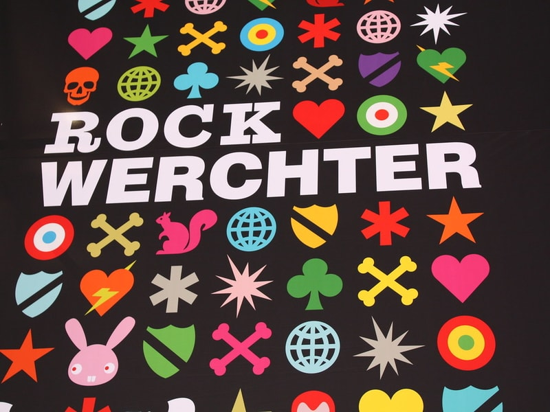
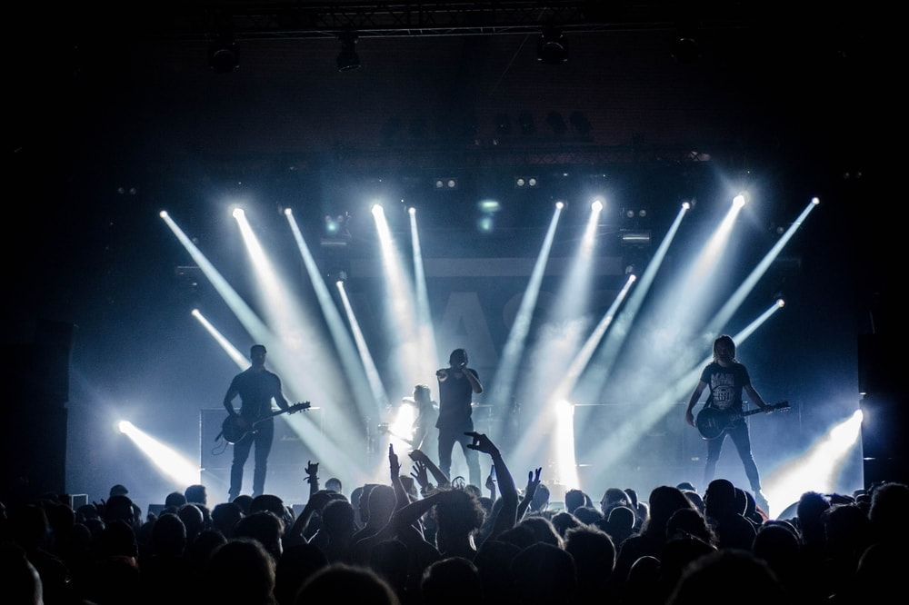

Rock, House, Metal of toch liever Dance? In België is er geen tekort aan festivals elke zomer, zo is er voor elke muziekstijl een festival. Bij More Festivals gaan we ons
verdiepen in de geschiedenis van enkele van de grootste en bekentste festivals van België!
Niet alleen het grootste festival van België, maar zelfs één van de grootste ter wereld! Tomorrowland
is een waar paradijs voor de Dance liefhebbers van over heel de wereld.
Rock Werchter is een pop- en rockfestival dat elk jaar plaatsvindt in het dorpje Werchter, een vier dagen durend feest voor
fans van Metallica, Radiohead, Björk, Moby en nog vele andere top-bands.


Voor wie van wat zwaardere muziek houdt is er Graspop Metal Meeting. Een vierdaags festival in Dessel propvol
met de zwaarste gitaren en luidkeels geschreeuw voor iedereen die van Heavy Metal houdt.